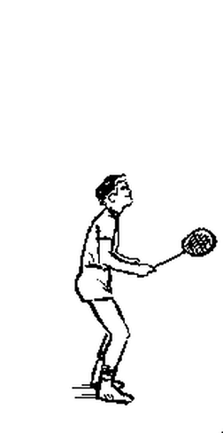
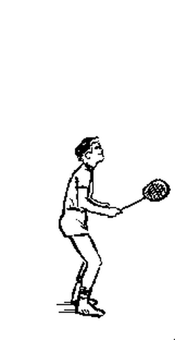
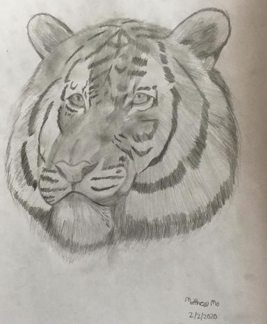

On this page you will find a lot of my hobbies. In the section Below I will talk about some in details. Some hobbies that you might see are sports, visual arts, gaming and music.
One of my hobbies is sports. I love sports and do it all the time. Some sports I do are swimming, volleyball, badminton, running, table tennis, ultimate frisbee and skiing.I run every morning and even got to city finals for cross country in grade 7.
 

Another hobby is music. I have been playing piano since grade 2 and passed level 10 in rcm/royal conservatory of music. I also very enjoy listening to music.

Another art hobbie that I do is Visual Arts/drawing. I started drawing since I was very little and still draw now. Below is one of my previous drawings.

Click Top to jump to the top.